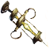
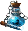
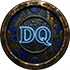
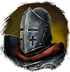

Эссенция
Предметы / Ресурсы
Открыть в интерактивной вики →
| Вес | 1 |
|---|---|
| Цена | 10 000 |
Описание
Ресурс, полученный из переплавленных редких предметов.
Требуется для зарядки экипировки, синэргетиков и эпичных предметов. Для улучшения экипировки. Для расплавки требуется
Можно получить 10x выполнив ежедневное задание
Требуется для зарядки экипировки, синэргетиков и эпичных предметов. Для улучшения экипировки. Для расплавки требуется

Экстрактор. Для зарядки требуется
Манамер.Можно получить 10x выполнив ежедневное задание

у
Ирсан на Заставе в Северном Алариле.| Сырьё, полученное при переплавке раров или дрифов. |
Способы получения
|